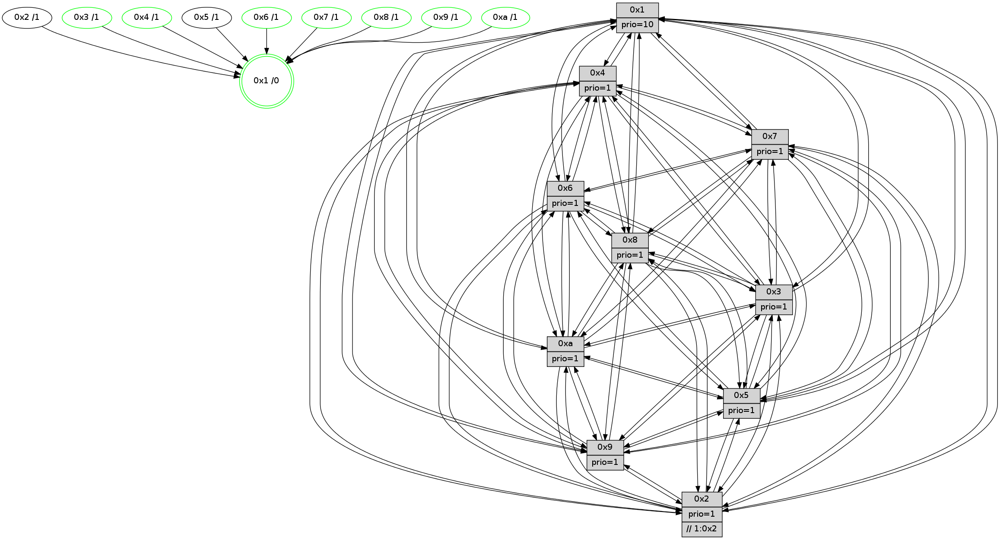

>> << IDX [start] -100 -25 -5 +0 +5 +25 +100 [980.0753901]
 Previous packets
----------------------------------------------------------------------
975.346602 beacon01(faad) #0 coord=01,02,03,04,05,06,07,0a,09,08 cycle=688.0ms assoc
-- color-indic=1 64 be 12
975.356585 beacon02(faad) #0 coord=01,02,03,04,05,06,07,0a,09,08 cycle=688.0ms assoc 64 2d 23
975.366584 beacon03(faad) #0 coord=01,02,03,04,05,06,07,0a,09,08 cycle=688.0ms assoc 64 57 6e
975.376586 beacon04(faad) #0 coord=01,02,03,04,05,06,07,0a,09,08 cycle=688.0ms assoc 64 20 84
975.386587 beacon05(faad) #0 coord=01,02,03,04,05,06,07,0a,09,08 cycle=688.0ms assoc 64 5a c9
975.396585 beacon06(faad) #0 coord=01,02,03,04,05,06,07,0a,09,08 cycle=688.0ms assoc 64 d4 1e
975.406585 beacon07(faad) #0 coord=01,02,03,04,05,06,07,0a,09,08 cycle=688.0ms assoc 64 ae 53
975.416592 beacon0a(faad) #0 coord=01,02,03,04,05,06,07,0a,09,08 cycle=688.0ms assoc 64 df 58
975.426591 beacon09(faad) #0 coord=01,02,03,04,05,06,07,0a,09,08 cycle=688.0ms assoc 64 51 8f
975.436592 beacon08(faad) #0 coord=01,02,03,04,05,06,07,0a,09,08 cycle=688.0ms assoc 64 2b c2
975.448138 [Hello(10): seq=556 sym=6,2,3,8,7,5,9,4,1 sysInfo=hasWarning stat=6:5,0,1,4/2:7,15,13,4/3:1,10,8,8/8:5,0,4,1/7:11,13,2,1/5:2,0,2,12/9:11,6,1,0/4:4,1,6,7/1:3,11,5,1]
975.450828 [Hello(7): seq=623 sym=2,3,5,6,4,8,9,10,1 sysInfo=hasWarning stat=2:13,0,9,12/3:13,4,1,12/5:15,15,5,15/6:11,2,1,6/4:6,1,0,1/8:15,8,2,0/9:10,3,1,0/10:12,11,7,2/1:1,7,1,0]
975.453391 PARSE ERROR************************
Traceback (most recent call last):
File "PacketAnalysis.py", line 167, in showOperaPacket
structPacket = OperaPacketParse.parsePacket(rawPacket)
File "../../pkg-python/HipSens/Core/OperaPacketParse.py", line 461, in parsePacket
return parseHelloMessage(data)
File "../../pkg-python/HipSens/Core/OperaPacketParse.py", line 127, in parseHelloMessage
assert struct.calcsize("H")*len(neighAddrList) == len(linkList)
AssertionError
48 34 04 00 02 6f 00 02 02 12 05 00 07 00 06 00 02 00 03 00 09 00 08 00 0a 00 01 00 53 04 00 00 00 00 4c 12 bd 5c 70 12 9a 16 99 5d 8a 14 82 5e 23 7a a6 b0 13 28 4c fb
975.458350 [STC(5)->1 #0.132 tree-change,inconsistent-stability,to-color d=1]
975.464051 [Color(1) seq=304 @0:0 prio=10]
----------------------------------------------------------------------
976.134733 beacon01(faad) #0 coord=01,02,03,04,05,06,07,0a,09,08 cycle=688.0ms assoc
-- color-indic=1 64 6a 27
976.144715 beacon02(faad) #0 coord=01,02,03,04,05,06,07,0a,09,08 cycle=688.0ms assoc 64 f9 16
976.154717 beacon03(faad) #0 coord=01,02,03,04,05,06,07,0a,09,08 cycle=688.0ms assoc 64 83 5b
976.164714 beacon04(faad) #0 coord=01,02,03,04,05,06,07,0a,09,08 cycle=688.0ms assoc 64 f4 b1
976.174717 beacon05(faad) #0 coord=01,02,03,04,05,06,07,0a,09,08 cycle=688.0ms assoc 64 8e fc
976.184717 beacon06(faad) #0 coord=01,02,03,04,05,06,07,0a,09,08 cycle=688.0ms assoc 64 00 2b
976.194715 beacon07(faad) #0 coord=01,02,03,04,05,06,07,0a,09,08 cycle=688.0ms assoc 64 7a 66
976.204723 beacon0a(faad) #0 coord=01,02,03,04,05,06,07,0a,09,08 cycle=688.0ms assoc 64 0b 6d
976.214720 beacon09(faad) #0 coord=01,02,03,04,05,06,07,0a,09,08 cycle=688.0ms assoc 64 85 ba
976.224721 beacon08(faad) #0 coord=01,02,03,04,05,06,07,0a,09,08 cycle=688.0ms assoc 64 ff f7
976.239295 [Hello(1): seq=533 sym=4,2,9,5,10,3,6,7 sysInfo=coloring-mode-on,ColoringModeRequestCalled stat=4:6,11,2,2/2:9,3,15,12/9:5,9,15,6/5:15,3,8,5/10:9,11,14,3/3:8,8,15,3/6:6,10,12,10/7:5,9,0,12]
976.241870 [Hello(3): seq=624 sym=1,7,6,2,4,8,9,10,5 sysInfo= stat=1:10,2,10,0/7:9,9,8,7/6:11,1,11,2/2:11,2,13,10/4:0,2,15,7/8:12,15,7,1/9:12,1,10,11/10:8,5,10,3/5:3,11,6,11]
976.244466 [Color(10) seq=228 @0:0 prio=1]
976.246062 [Color(7) seq=207 @0:0 prio=1]
976.247382 [Color(3) seq=253 @0:0 prio=1]
976.249088 [Color(8) seq=257 @0:0 prio=1]
976.251586 [Color(4) seq=216 @0:0 prio=1]
976.254014 [Color(9) seq=256 @0:0 prio=1]
976.257642 [Hello(6): seq=624 sym=2,3,5,4,7,9,8,10,1 sysInfo= stat=2:0,0,0,0/3:12,2,1,10/5:10,9,0,12/4:14,9,8,2/7:2,8,15,6/9:4,11,15,5/8:15,9,12,2/10:0,15,6,11/1:14,14,15,1]
976.260458 [Color(6) seq=256 @0:0 prio=1]
----------------------------------------------------------------------
976.922864 beacon01(faad) #0 coord=01,02,03,04,05,06,07,0a,09,08 cycle=688.0ms assoc
-- color-indic=1 64 d6 22
976.932846 beacon02(faad) #0 coord=01,02,03,04,05,06,07,0a,09,08 cycle=688.0ms assoc 64 45 13
976.942846 beacon03(faad) #0 coord=01,02,03,04,05,06,07,0a,09,08 cycle=688.0ms assoc 64 3f 5e
976.952847 beacon04(faad) #0 coord=01,02,03,04,05,06,07,0a,09,08 cycle=688.0ms assoc 64 48 b4
976.962848 beacon05(faad) #0 coord=01,02,03,04,05,06,07,0a,09,08 cycle=688.0ms assoc 64 32 f9
976.972848 beacon06(faad) #0 coord=01,02,03,04,05,06,07,0a,09,08 cycle=688.0ms assoc 64 bc 2e
976.982849 beacon07(faad) #0 coord=01,02,03,04,05,06,07,0a,09,08 cycle=688.0ms assoc 64 c6 63
976.992851 beacon0a(faad) #0 coord=01,02,03,04,05,06,07,0a,09,08 cycle=688.0ms assoc 64 b7 68
977.002852 beacon09(faad) #0 coord=01,02,03,04,05,06,07,0a,09,08 cycle=688.0ms assoc 64 39 bf
977.012853 beacon08(faad) #0 coord=01,02,03,04,05,06,07,0a,09,08 cycle=688.0ms assoc 64 43 f2
977.024076 [Hello(9): seq=568 sym=2,5,3,4,7,6,8,10,1 sysInfo=hasWarning stat=2:1,7,15,3/5:6,6,12,3/3:1,2,12,12/4:14,3,10,7/7:0,6,15,9/6:2,13,4,8/8:12,10,15,2/10:4,2,2,1/1:12,14,2,1]
977.027080 [Hello(8): seq=568 sym=5,2,3,4,9,6,7,10,1 sysInfo=hasWarning stat=5:2,4,4,12/2:2,0,14,5/3:5,8,14,12/4:15,15,13,8/9:11,6,2,1/6:6,13,12,10/7:12,11,4,1/10:10,7,6,1/1:8,2,14,0]
977.030713 [Hello(10): seq=557 sym=6,2,3,8,7,5,9,4,1 sysInfo=hasWarning stat=6:6,1,1,4/2:8,15,13,4/3:1,11,8,8/8:5,1,4,1/7:12,14,2,1/5:2,0,3,12/9:11,7,1,0/4:5,2,6,7/1:3,12,5,1]
977.035207 [Hello(4): seq=624 sym=5,7,6,2,3,9,8,10,1 sysInfo= stat=5:12,5,14,11/7:2,1,0,7/6:7,2,10,9/2:14,5,9,9/3:4,1,10,8/9:14,6,2,8/8:10,7,3,2/10:0,11,6,10/1:8,3,3,1]
977.039166 [Hello(7): seq=624 sym=2,3,5,6,4,8,9,10,1 sysInfo=hasWarning stat=2:14,0,9,12/3:13,5,1,12/5:15,15,6,15/6:12,3,1,6/4:7,2,0,1/8:15,9,2,0/9:10,4,1,0/10:12,11,7,2/1:1,8,1,0]
----------------------------------------------------------------------
977.710994 beacon01(faad) #0 coord=01,02,03,04,05,06,07,0a,09,08 cycle=688.0ms assoc
-- color-indic=1 64 12 2c
977.720977 beacon02(faad) #0 coord=01,02,03,04,05,06,07,0a,09,08 cycle=688.0ms assoc 64 81 1d
977.730977 beacon03(faad) #0 coord=01,02,03,04,05,06,07,0a,09,08 cycle=688.0ms assoc 64 fb 50
977.740977 beacon04(faad) #0 coord=01,02,03,04,05,06,07,0a,09,08 cycle=688.0ms assoc 64 8c ba
977.750976 beacon05(faad) #0 coord=01,02,03,04,05,06,07,0a,09,08 cycle=688.0ms assoc 64 f6 f7
977.760978 beacon06(faad) #0 coord=01,02,03,04,05,06,07,0a,09,08 cycle=688.0ms assoc 64 78 20
977.770978 beacon07(faad) #0 coord=01,02,03,04,05,06,07,0a,09,08 cycle=688.0ms assoc 64 02 6d
977.780982 beacon0a(faad) #0 coord=01,02,03,04,05,06,07,0a,09,08 cycle=688.0ms assoc 64 73 66
977.790982 beacon09(faad) #0 coord=01,02,03,04,05,06,07,0a,09,08 cycle=688.0ms assoc 64 fd b1
977.800983 beacon08(faad) #0 coord=01,02,03,04,05,06,07,0a,09,08 cycle=688.0ms assoc 64 87 fc
977.812567 [Hello(1): seq=534 sym=4,2,9,5,10,3,8,6,7 sysInfo=coloring-mode-on,ColoringModeRequestCalled stat=4:6,12,2,2/2:9,3,15,12/9:6,10,15,6/5:15,3,8,5/10:9,12,14,3/3:9,9,15,3/8:0,0,0,0/6:7,11,12,10/7:5,10,0,12]
977.815167 [Hello(2): seq=621 sym=4,5,7,6,3,9,8,10,1 sysInfo=hasWarning stat=4:9,4,6,6/5:14,5,7,1/7:12,12,3,9/6:5,4,10,8/3:6,8,8,5/9:6,10,12,5/8:12,5,7,8/10:14,7,13,10/1:7,6,1,1]
977.818336 [Color(4) seq=217 @0:0 prio=1]
977.819942 [Color(9) seq=257 @0:0 prio=1]
977.821548 [Hello(6): seq=625 sym=2,3,5,4,7,9,8,10,1 sysInfo= stat=2:1,0,0,0/3:12,2,1,10/5:10,9,0,12/4:15,9,8,2/7:3,8,15,6/9:5,11,15,5/8:0,9,12,2/10:1,15,6,11/1:15,14,15,1]
977.825640 [Hello(5): seq=625 sym=7,6,4,3,1,9,8,10,2 sysInfo=hasWarning stat=7:3,10,5,9/6:9,14,4,0/4:0,5,1,8/3:7,14,9,10/1:10,9,5,1/9:13,15,15,5/8:14,4,12,9/10:13,4,9,5/2:1,0,0,0]
977.830756 [Color(10) seq=229 @0:0 prio=1]
977.833424 [Color(7) seq=208 @0:0 prio=1]
977.835883 [Hello(3): seq=625 sym=1,7,6,2,4,8,9,10,5 sysInfo= stat=1:10,3,10,0/7:9,9,8,7/6:12,2,11,2/2:12,2,13,10/4:1,3,15,7/8:13,0,7,1/9:13,2,10,11/10:9,5,10,3/5:3,11,6,11]
977.838571 [Color(8) seq=258 @0:0 prio=1]
977.841874 [Color(6) seq=257 @0:0 prio=1]
977.850167 [Color(3) seq=254 @0:0 prio=1]
----------------------------------------------------------------------
978.499127 beacon01(faad) #0 coord=01,02,03,04,05,06,07,0a,09,08 cycle=688.0ms assoc
-- color-indic=1 64 ae 29
978.509109 beacon02(faad) #0 coord=01,02,03,04,05,06,07,0a,09,08 cycle=688.0ms assoc 64 3d 18
978.519110 beacon03(faad) #0 coord=01,02,03,04,05,06,07,0a,09,08 cycle=688.0ms assoc 64 47 55
978.529111 beacon04(faad) #0 coord=01,02,03,04,05,06,07,0a,09,08 cycle=688.0ms assoc 64 30 bf
978.539111 beacon05(faad) #0 coord=01,02,03,04,05,06,07,0a,09,08 cycle=688.0ms assoc 64 4a f2
978.549109 beacon06(faad) #0 coord=01,02,03,04,05,06,07,0a,09,08 cycle=688.0ms assoc 64 c4 25
978.559111 beacon07(faad) #0 coord=01,02,03,04,05,06,07,0a,09,08 cycle=688.0ms assoc 64 be 68
978.569115 beacon0a(faad) #0 coord=01,02,03,04,05,06,07,0a,09,08 cycle=688.0ms assoc 64 cf 63
978.579116 beacon09(faad) #0 coord=01,02,03,04,05,06,07,0a,09,08 cycle=688.0ms assoc 64 41 b4
978.589116 beacon08(faad) #0 coord=01,02,03,04,05,06,07,0a,09,08 cycle=688.0ms assoc 64 3b f9
978.600341 [Hello(10): seq=558 sym=6,2,3,8,7,5,9,4,1 sysInfo=hasWarning stat=6:6,2,1,4/2:8,15,13,4/3:2,12,8,8/8:5,2,4,1/7:13,15,2,1/5:2,0,3,12/9:11,7,1,0/4:6,2,6,7/1:4,12,5,1]
978.604138 [Hello(4): seq=625 sym=5,7,6,2,3,9,8,10,1 sysInfo= stat=5:13,5,14,11/7:3,2,0,7/6:8,3,10,9/2:14,5,9,9/3:5,2,10,8/9:14,7,2,8/8:10,8,3,2/10:0,12,6,10/1:9,3,3,1]
978.606556 [Hello(7): seq=625 sym=2,3,5,6,4,8,9,10,1 sysInfo=hasWarning stat=2:14,0,9,12/3:14,6,1,12/5:15,15,6,15/6:12,4,1,6/4:7,2,0,1/8:15,10,2,0/9:10,4,1,0/10:12,11,7,2/1:2,8,1,0]
978.611748 [Hello(8): seq=569 sym=5,2,3,4,9,6,7,10,1 sysInfo=hasWarning stat=5:2,4,4,12/2:2,0,14,5/3:5,9,14,12/4:0,15,13,8/9:11,6,2,1/6:6,14,12,10/7:12,11,4,1/10:11,7,6,1/1:9,2,14,0]
978.614995 [Hello(9): seq=569 sym=2,5,3,4,7,6,8,10,1 sysInfo=hasWarning stat=2:1,7,15,3/5:7,6,12,3/3:2,3,12,12/4:15,3,10,7/7:0,7,15,9/6:3,14,4,8/8:13,11,15,2/10:5,3,2,1/1:13,15,2,1]
978.617547 [Color(1) seq=306 @0:0 prio=10]
----------------------------------------------------------------------
979.287259 beacon01(faad) #0 coord=01,02,03,04,05,06,07,0a,09,08 cycle=688.0ms assoc
-- color-indic=1 64 9a 31
979.297242 beacon02(faad) #0 coord=01,02,03,04,05,06,07,0a,09,08 cycle=688.0ms assoc 64 09 00
979.307241 beacon03(faad) #0 coord=01,02,03,04,05,06,07,0a,09,08 cycle=688.0ms assoc 64 73 4d
979.317243 beacon04(faad) #0 coord=01,02,03,04,05,06,07,0a,09,08 cycle=688.0ms assoc 64 04 a7
979.327245 beacon05(faad) #0 coord=01,02,03,04,05,06,07,0a,09,08 cycle=688.0ms assoc 64 7e ea
979.337242 beacon06(faad) #0 coord=01,02,03,04,05,06,07,0a,09,08 cycle=688.0ms assoc 64 f0 3d
979.347242 beacon07(faad) #0 coord=01,02,03,04,05,06,07,0a,09,08 cycle=688.0ms assoc 64 8a 70
979.357248 beacon0a(faad) #0 coord=01,02,03,04,05,06,07,0a,09,08 cycle=688.0ms assoc 64 fb 7b
979.367246 beacon09(faad) #0 coord=01,02,03,04,05,06,07,0a,09,08 cycle=688.0ms assoc 64 75 ac
979.377248 beacon08(faad) #0 coord=01,02,03,04,05,06,07,0a,09,08 cycle=688.0ms assoc 64 0f e1
979.388198 [Hello(1): seq=535 sym=4,2,9,5,10,3,8,6,7 sysInfo=coloring-mode-on,ColoringModeRequestCalled stat=4:6,13,2,2/2:10,3,15,12/9:6,11,15,6/5:0,3,8,5/10:10,13,14,3/3:10,10,15,3/8:0,1,0,0/6:8,12,12,10/7:5,11,0,12]
979.390780 [Hello(2): seq=622 sym=4,5,7,6,3,9,8,10,1 sysInfo=hasWarning stat=4:10,5,6,6/5:15,5,7,1/7:12,13,3,9/6:6,5,10,8/3:7,9,8,5/9:7,11,12,5/8:13,6,7,8/10:15,8,13,10/1:7,7,1,1]
979.396201 [STC(10)->1 #0.133 tree-change,inconsistent-stability,stable,to-color d=1]
979.398754 [Color(4) seq=218 @0:0 prio=1]
979.401188 [Color(10) seq=230 @0:0 prio=1]
979.402676 [STC(3)->1 #0.133 tree-change,inconsistent-stability,stable,to-color d=1]
979.404168 [Hello(5): seq=626 sym=7,6,4,3,1,9,8,10,2 sysInfo=hasWarning stat=7:3,11,5,9/6:9,15,4,0/4:1,5,1,8/3:8,15,9,10/1:10,10,5,1/9:14,15,15,5/8:15,5,12,9/10:14,5,9,5/2:1,0,0,0]
979.407665 [Hello(6): seq=626 sym=2,3,5,4,7,9,8,10,1 sysInfo= stat=2:2,0,0,0/3:12,3,1,10/5:10,9,0,12/4:15,9,8,2/7:4,8,15,6/9:6,11,15,5/8:1,9,12,2/10:2,15,6,11/1:0,15,0,1]
979.410684 [Color(8) seq=259 @0:0 prio=1]
979.412408 [STC(6)->1 #0.133 tree-change,inconsistent-stability,stable,to-color d=1]
979.414691 [Color(6) seq=258 @0:0 prio=1]
979.416084 [Color(3) seq=255 @0:0 prio=1]